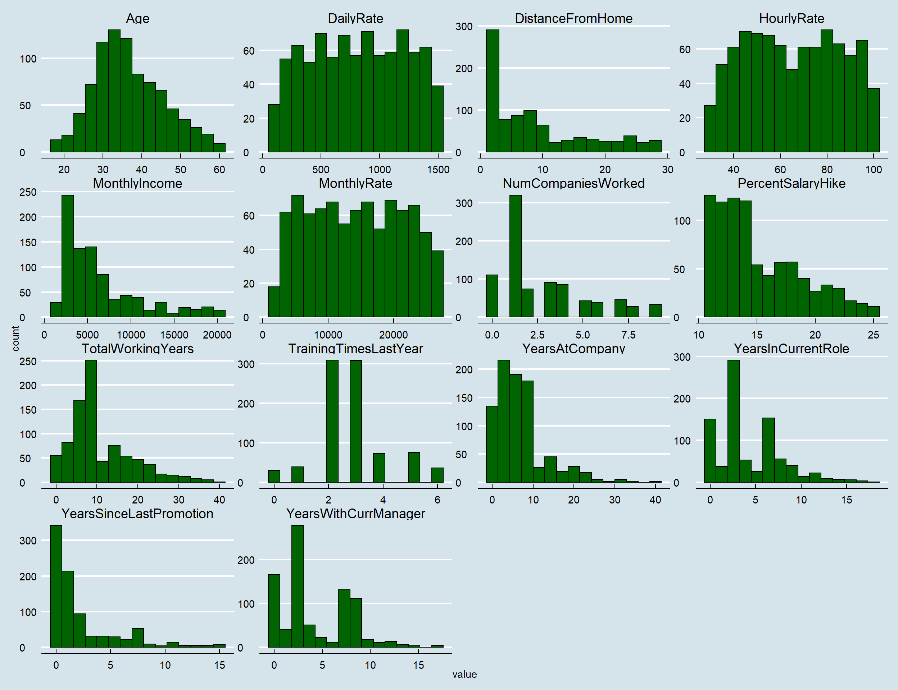
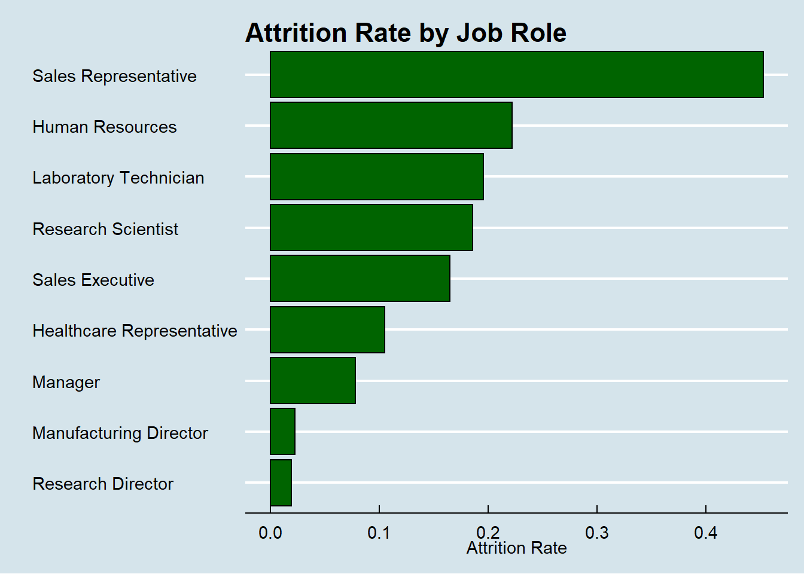
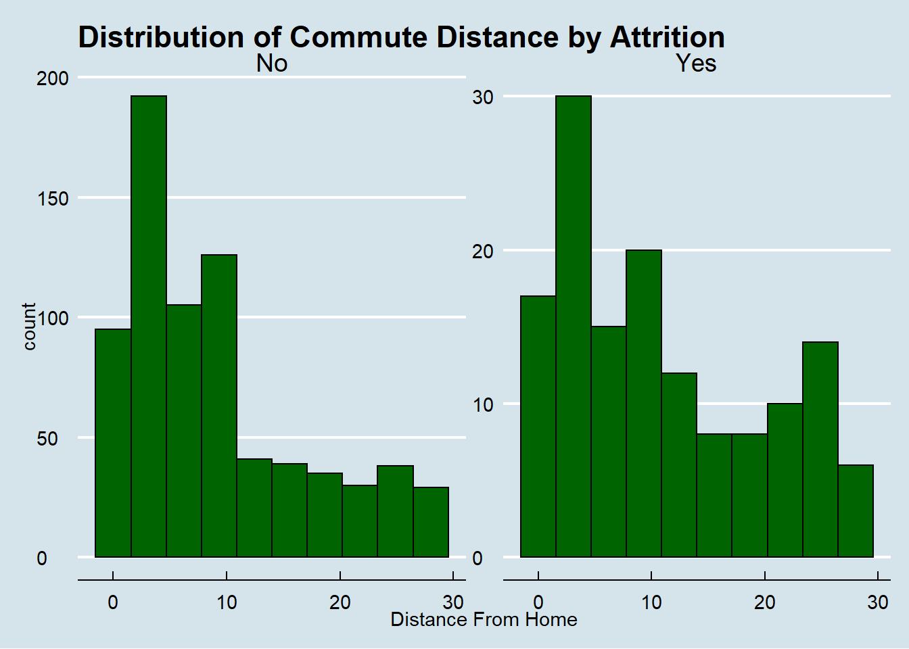
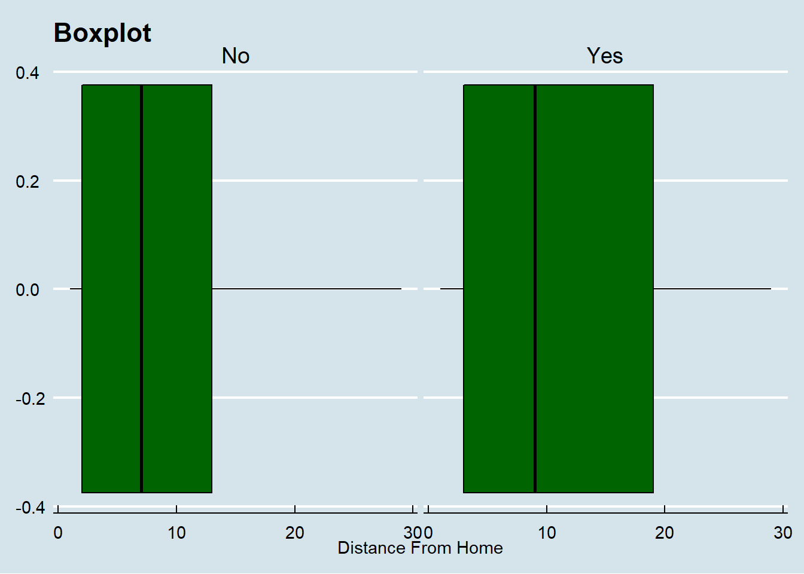
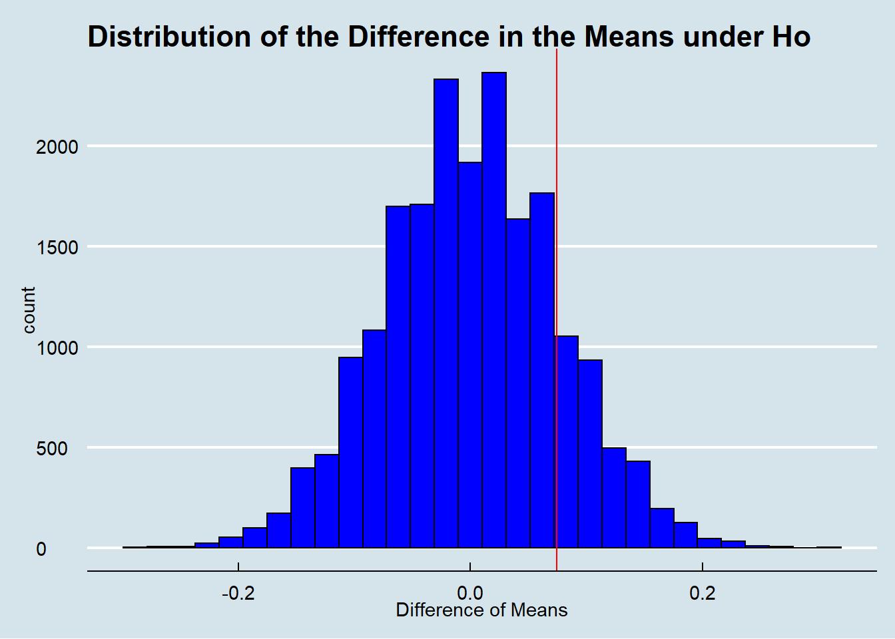

The goal of this analysis is to provide insights regarding attrition, monthly income, and other metrics. The data and subsequent analysis suggest, but do not necessarily prove, the following:
library(dplyr)
library(tidyverse)
library(ggplot2)
library(ggthemes)
library(caret)
library(e1071)
library(car)
library(aod)
library(olsrr)
library(psych)
library(class)data = read.csv(file = "https://raw.githubusercontent.com/xloganmiller/CaseStudy2DDS/main/CaseStudy2-data.csv",
stringsAsFactors = T,
header = T)
colnames(data)## [1] "ID" "Age" "Attrition" "BusinessTravel" "DailyRate"
## [6] "Department" "DistanceFromHome" "Education" "EducationField" "EmployeeCount"
## [11] "EmployeeNumber" "EnvironmentSatisfaction" "Gender" "HourlyRate" "JobInvolvement"
## [16] "JobLevel" "JobRole" "JobSatisfaction" "MaritalStatus" "MonthlyIncome"
## [21] "MonthlyRate" "NumCompaniesWorked" "Over18" "OverTime" "PercentSalaryHike"
## [26] "PerformanceRating" "RelationshipSatisfaction" "StandardHours" "StockOptionLevel" "TotalWorkingYears"
## [31] "TrainingTimesLastYear" "WorkLifeBalance" "YearsAtCompany" "YearsInCurrentRole" "YearsSinceLastPromotion"
## [36] "YearsWithCurrManager"data$JobSatisfaction = factor(data$JobSatisfaction)
data$EnvironmentSatisfaction = factor(data$EnvironmentSatisfaction)
data$JobRole = factor(data$JobRole)
data$StockOptionLevel = factor(data$StockOptionLevel)
data$PerformanceRating = factor(data$PerformanceRating)
data$RelationshipSatisfaction = factor(data$RelationshipSatisfaction)
data$WorkLifeBalance = factor(data$WorkLifeBalance)
data$Education = factor(data$Education)
data$JobInvolvement = factor(data$JobInvolvement)
data$JobLevel = factor(data$JobLevel)
filtered_data = data %>% dplyr::select(-EmployeeCount, -ID, -Over18, -EmployeeNumber, -StandardHours)
numeric_columns = filtered_data %>% select_if(is.numeric) %>% colnames()
scaled_data = filtered_data
scaled_data[, numeric_columns] = scale(scaled_data[, numeric_columns])filtered_data %>%
select_if(is.numeric) %>%
gather() %>%
ggplot(aes(x = value)) +
geom_histogram(bins = 15, fill = 'dark green', color = 'black') +
facet_wrap(~key, scales = 'free') +
theme_economist()
Variables have different distributions so we will need to use the scaled data in KNN
data = data %>% mutate(AttritionValue = ifelse(Attrition == 'Yes', 1, 0))
data %>%
dplyr::select(JobRole, Attrition, JobSatisfaction) %>%
mutate(Turnover = ifelse(Attrition == 'Yes', 1, 0)) %>%
group_by(JobRole) %>%
summarise(
TurnoverCount = sum(Turnover),
EmployeeCount = n(),
TurnoverPercent = round(sum(Turnover) / n(), 4),
AverageJobSat = mean(as.numeric(JobSatisfaction))
) %>%
arrange(-AverageJobSat)## # A tibble: 9 x 5
## JobRole TurnoverCount EmployeeCount TurnoverPercent AverageJobSat
## <fct> <dbl> <int> <dbl> <dbl>
## 1 Healthcare Representative 8 76 0.105 2.83
## 2 Research Scientist 32 172 0.186 2.80
## 3 Sales Executive 33 200 0.165 2.72
## 4 Manufacturing Director 2 87 0.023 2.72
## 5 Sales Representative 24 53 0.453 2.70
## 6 Laboratory Technician 30 153 0.196 2.69
## 7 Human Resources 6 27 0.222 2.56
## 8 Manager 4 51 0.0784 2.51
## 9 Research Director 1 51 0.0196 2.49data %>%
dplyr::select(Attrition, Gender, JobLevel) %>%
filter(Attrition == 'Yes') %>%
group_by(Gender) %>%
summarise(
TurnoverCount = n(),
EmployeeCount = 140,
TurnoverPercent = round(n() / 140, 4),
AverageJobLevel = mean(as.numeric(JobLevel))
)## # A tibble: 2 x 5
## Gender TurnoverCount EmployeeCount TurnoverPercent AverageJobLevel
## <fct> <int> <dbl> <dbl> <dbl>
## 1 Female 53 140 0.379 1.72
## 2 Male 87 140 0.621 1.59data %>%
dplyr::select(Gender) %>%
group_by(Gender) %>%
summarise(
count = n()
)## # A tibble: 2 x 2
## Gender count
## <fct> <int>
## 1 Female 354
## 2 Male 516data %>%
dplyr::select(JobRole, Attrition) %>%
mutate(Turnover = ifelse(Attrition == 'Yes', 1, 0)) %>%
group_by(JobRole) %>%
summarise(
TurnoverPercent = round(sum(Turnover) / n(), 4),
) %>%
mutate(JobRole = fct_reorder(JobRole, TurnoverPercent)) %>%
ggplot(aes(x = JobRole, y = TurnoverPercent)) +
geom_col(fill = 'dark green', color = 'black')+
coord_flip() +
theme_economist()+
labs( x = '', y = 'Attrition Rate',title = 'Attrition Rate by Job Role')
summary(data$Attrition)## No Yes
## 730 140Research Director lowest average job satisfaction. Sales Representatives have extremely high turnover.
##Split into train and test sets for regressions
set.seed(66)
sample_size = floor(.70 * nrow(filtered_data))
train_index = sample(seq_len(nrow(filtered_data)), size = sample_size)
train_df = filtered_data[train_index, ]
test_df = filtered_data[-train_index, ]options(warn = 1)
logit_model = glm(
relevel(Attrition, ref = "Yes") ~ .,
data = train_df,
family = 'binomial'
)
step_logit_model = step(logit_model, trace = 0, direction = 'both')
summary(step_logit_model)
options(warn = 1)
# aod::wald.test(b = coef(logit_model), Sigma = vcov(logit_model), Terms = 5:8)options(scipen = 100)
step_logit_coeffs = data.frame(coeffs = round(exp(step_logit_model$coefficients), 3))
step_logit_coeffs$name = rownames(step_logit_coeffs)
step_logit_coeffs## coeffs name
## (Intercept) 0.003 (Intercept)
## Age 1.046 Age
## BusinessTravelTravel_Frequently 0.066 BusinessTravelTravel_Frequently
## BusinessTravelTravel_Rarely 0.350 BusinessTravelTravel_Rarely
## DistanceFromHome 0.928 DistanceFromHome
## EnvironmentSatisfaction2 4.646 EnvironmentSatisfaction2
## EnvironmentSatisfaction3 6.765 EnvironmentSatisfaction3
## EnvironmentSatisfaction4 6.840 EnvironmentSatisfaction4
## HourlyRate 0.985 HourlyRate
## JobInvolvement2 5.732 JobInvolvement2
## JobInvolvement3 11.872 JobInvolvement3
## JobInvolvement4 20.601 JobInvolvement4
## JobLevel2 15.855 JobLevel2
## JobLevel3 1.309 JobLevel3
## JobLevel4 10.081 JobLevel4
## JobLevel5 0.459 JobLevel5
## JobRoleHuman Resources 1.435 JobRoleHuman Resources
## JobRoleLaboratory Technician 1.583 JobRoleLaboratory Technician
## JobRoleManager 67211240.701 JobRoleManager
## JobRoleManufacturing Director 21026855.252 JobRoleManufacturing Director
## JobRoleResearch Director 179689951.343 JobRoleResearch Director
## JobRoleResearch Scientist 4.364 JobRoleResearch Scientist
## JobRoleSales Executive 0.308 JobRoleSales Executive
## JobRoleSales Representative 0.566 JobRoleSales Representative
## JobSatisfaction2 3.074 JobSatisfaction2
## JobSatisfaction3 1.583 JobSatisfaction3
## JobSatisfaction4 7.275 JobSatisfaction4
## MaritalStatusMarried 0.256 MaritalStatusMarried
## MaritalStatusSingle 0.190 MaritalStatusSingle
## NumCompaniesWorked 0.730 NumCompaniesWorked
## OverTimeYes 0.086 OverTimeYes
## PercentSalaryHike 1.116 PercentSalaryHike
## PerformanceRating4 0.145 PerformanceRating4
## RelationshipSatisfaction2 2.687 RelationshipSatisfaction2
## RelationshipSatisfaction3 3.466 RelationshipSatisfaction3
## RelationshipSatisfaction4 3.212 RelationshipSatisfaction4
## StockOptionLevel1 4.031 StockOptionLevel1
## StockOptionLevel2 4.442 StockOptionLevel2
## StockOptionLevel3 0.463 StockOptionLevel3
## TotalWorkingYears 1.165 TotalWorkingYears
## TrainingTimesLastYear 1.231 TrainingTimesLastYear
## WorkLifeBalance2 5.717 WorkLifeBalance2
## WorkLifeBalance3 11.691 WorkLifeBalance3
## WorkLifeBalance4 19.556 WorkLifeBalance4
## YearsAtCompany 0.825 YearsAtCompany
## YearsInCurrentRole 1.289 YearsInCurrentRole
## YearsSinceLastPromotion 0.746 YearsSinceLastPromotion
## YearsWithCurrManager 1.292 YearsWithCurrManagertest_probs = predict(step_logit_model, test_df, type = 'response')
test_preds = ifelse(test_probs > 0.5, 'No', 'Yes')
cm = caret::confusionMatrix(table(test_preds, test_df$Attrition))
cm## Confusion Matrix and Statistics
##
##
## test_preds No Yes
## No 212 22
## Yes 10 17
##
## Accuracy : 0.8774
## 95% CI : (0.8313, 0.9146)
## No Information Rate : 0.8506
## P-Value [Acc > NIR] : 0.12813
##
## Kappa : 0.4476
##
## Mcnemar's Test P-Value : 0.05183
##
## Sensitivity : 0.9550
## Specificity : 0.4359
## Pos Pred Value : 0.9060
## Neg Pred Value : 0.6296
## Prevalence : 0.8506
## Detection Rate : 0.8123
## Detection Prevalence : 0.8966
## Balanced Accuracy : 0.6954
##
## 'Positive' Class : No
## Logit regression does a decent job of predicting attrition. However, it struggles more with correctly predicting employees who left their jobs than vice versa.
factor_names = filtered_data %>% dplyr::select(-Attrition) %>% select_if(is.factor) %>% colnames()
knn_scaled_df = scaled_data
for(col_name in factor_names){
if(length(levels(knn_scaled_df[, col_name])) == 2){
knn_scaled_df[, col_name] = dummy.code(knn_scaled_df[, col_name])
} else{
dummy_df = as.data.frame(psych::dummy.code(knn_scaled_df[, col_name]))
colnames(dummy_df) = paste(col_name, colnames(dummy_df))
knn_scaled_df = cbind(knn_scaled_df, dummy_df)
knn_scaled_df = knn_scaled_df %>% dplyr::select(-col_name)
}
}
knn_test_comparision = data.frame(accuracy = numeric(100)
, sensitivity = numeric(100)
, specificity = numeric(100))
train_data = knn_scaled_df[train_index,]
test_data = knn_scaled_df[-train_index,]
knn_test_comparision = data.frame(k = 1:20
,accuracy = numeric(20)
, sensitivity = numeric(20)
, specificity = numeric(20))
set.seed(69)
for(i in 1:20) {
loop_knn_model = knn(
train = train_data %>% dplyr::select(-Attrition),
test = test_data %>% dplyr::select(-Attrition),
cl = train_data$Attrition,
k = i,
prob = TRUE
)
cf = confusionMatrix(table(loop_knn_model, test_data$Attrition))
accuracy = round(cf$overall[1], 4)
sensitivity = round(cf$byClass[1], 4)
specificity = round(cf$byClass[2], 4)
knn_test_comparision[i, c(2,3,4)] = c(accuracy,
sensitivity,
specificity)
}
knn_test_comparision## k accuracy sensitivity specificity
## 1 1 0.7969 0.9009 0.2051
## 2 2 0.8084 0.9144 0.2051
## 3 3 0.8582 0.9820 0.1538
## 4 4 0.8582 0.9910 0.1026
## 5 5 0.8621 1.0000 0.0769
## 6 6 0.8544 0.9865 0.1026
## 7 7 0.8621 0.9955 0.1026
## 8 8 0.8544 0.9820 0.1282
## 9 9 0.8582 0.9910 0.1026
## 10 10 0.8544 0.9910 0.0769
## 11 11 0.8544 0.9910 0.0769
## 12 12 0.8582 0.9955 0.0769
## 13 13 0.8582 0.9955 0.0769
## 14 14 0.8582 0.9955 0.0769
## 15 15 0.8544 0.9955 0.0513
## 16 16 0.8544 0.9955 0.0513
## 17 17 0.8506 0.9955 0.0256
## 18 18 0.8544 1.0000 0.0256
## 19 19 0.8506 0.9955 0.0256
## 20 20 0.8582 1.0000 0.0513Decent overall accuracy but poor specifity, presumably due to KNN’s shortcomings when it comes to categorical variables
nb_train = scaled_data[train_index,]
nb_test = scaled_data[-train_index,]
nb_model = naiveBayes(Attrition ~. , data = nb_train)
nb_preds = predict(nb_model, nb_test, type = 'class')
caret::confusionMatrix(table(nb_preds, nb_test$Attrition))## Confusion Matrix and Statistics
##
##
## nb_preds No Yes
## No 186 17
## Yes 36 22
##
## Accuracy : 0.7969
## 95% CI : (0.743, 0.844)
## No Information Rate : 0.8506
## P-Value [Acc > NIR] : 0.99236
##
## Kappa : 0.3347
##
## Mcnemar's Test P-Value : 0.01342
##
## Sensitivity : 0.8378
## Specificity : 0.5641
## Pos Pred Value : 0.9163
## Neg Pred Value : 0.3793
## Prevalence : 0.8506
## Detection Rate : 0.7126
## Detection Prevalence : 0.7778
## Balanced Accuracy : 0.7010
##
## 'Positive' Class : No
## nb_test_comparision = data.frame(accuracy = numeric(20)
, sensitivity = numeric(20)
, specificity = numeric(20))
for(i in 1:20) {
nb_train_index = sample(seq_len(nrow(filtered_data)), size = sample_size)
nb_loop_train = scaled_data[nb_train_index,]
nb_loop_test = scaled_data[-nb_train_index,]
loop_nb_model = naiveBayes(Attrition ~. , data = nb_loop_train)
loop_nb_preds = predict(nb_model, nb_loop_test, type = 'class')
cf = confusionMatrix(table(loop_nb_preds, nb_loop_test$Attrition))
cf
accuracy = round(cf$overall[1], 4)
sensitivity = round(cf$byClass[1], 4)
specificity = round(cf$byClass[2], 4)
nb_test_comparision[i, c(1,2,3)] = c(accuracy,
sensitivity,
specificity)
}
nb_test_comparision %>% gather() %>% group_by(key) %>% summarise(average = mean(value))## # A tibble: 3 x 2
## key average
## <chr> <dbl>
## 1 accuracy 0.793
## 2 sensitivity 0.810
## 3 specificity 0.705Similar accuracy to the KNN model but the NB model is much more well balanced and the difference between the sensitivity and specifity averages over 20 iterations is much smaller.
linear_model = lm(MonthlyIncome ~. , data = train_df)
step_linear_model = step(linear_model, trace = 0)
summary(step_linear_model)##
## Call:
## lm(formula = MonthlyIncome ~ BusinessTravel + DailyRate + Gender +
## JobLevel + JobRole + TotalWorkingYears, data = train_df)
##
## Residuals:
## Min 1Q Median 3Q Max
## -3002.8 -616.0 -92.5 616.1 4113.3
##
## Coefficients:
## Estimate Std. Error t value Pr(>|t|)
## (Intercept) 3108.8725 264.1249 11.770 < 0.0000000000000002 ***
## BusinessTravelTravel_Frequently -26.9121 159.3266 -0.169 0.86592
## BusinessTravelTravel_Rarely 205.6971 134.3544 1.531 0.12630
## DailyRate 0.2341 0.1014 2.308 0.02136 *
## GenderMale 124.9316 82.6958 1.511 0.13139
## JobLevel2 1855.8046 165.5301 11.211 < 0.0000000000000002 ***
## JobLevel3 5185.8938 220.4970 23.519 < 0.0000000000000002 ***
## JobLevel4 8545.6819 328.8593 25.986 < 0.0000000000000002 ***
## JobLevel5 11210.6249 402.0333 27.885 < 0.0000000000000002 ***
## JobRoleHuman Resources -1052.7841 282.2195 -3.730 0.00021 ***
## JobRoleLaboratory Technician -1087.6859 205.0241 -5.305 0.000000159 ***
## JobRoleManager 3384.7098 283.1562 11.954 < 0.0000000000000002 ***
## JobRoleManufacturing Director 40.4401 183.2379 0.221 0.82540
## JobRoleResearch Director 3424.1054 259.4474 13.198 < 0.0000000000000002 ***
## JobRoleResearch Scientist -921.0786 205.8215 -4.475 0.000009163 ***
## JobRoleSales Executive -172.4710 154.9798 -1.113 0.26622
## JobRoleSales Representative -1069.2055 250.8638 -4.262 0.000023568 ***
## TotalWorkingYears 39.6384 8.9743 4.417 0.000011911 ***
## ---
## Signif. codes: 0 '***' 0.001 '**' 0.01 '*' 0.05 '.' 0.1 ' ' 1
##
## Residual standard error: 984.3 on 591 degrees of freedom
## Multiple R-squared: 0.9537, Adjusted R-squared: 0.9524
## F-statistic: 716.6 on 17 and 591 DF, p-value: < 0.00000000000000022step_lm_pred = predict(step_linear_model, test_df)
mean(step_lm_pred)## [1] 6640.231# Does the R-squared remain high for the test set
cor(step_lm_pred, test_df$MonthlyIncome) ^ 2## [1] 0.9516851RMSE(step_lm_pred, test_df$MonthlyIncome)## [1] 1053.328caret::varImp(step_logit_model)## Overall
## Age 1.8174335968
## BusinessTravelTravel_Frequently 3.4056803738
## BusinessTravelTravel_Rarely 1.5345976278
## DistanceFromHome 3.3090330368
## EnvironmentSatisfaction2 2.7744024480
## EnvironmentSatisfaction3 3.8513647185
## EnvironmentSatisfaction4 3.6587274365
## HourlyRate 1.6885828504
## JobInvolvement2 2.6795784278
## JobInvolvement3 3.9441740478
## JobInvolvement4 2.9995276027
## JobLevel2 2.6411903800
## JobLevel3 0.2215139639
## JobLevel4 1.1303094990
## JobLevel5 0.0003601062
## JobRoleHuman Resources 0.2746373580
## JobRoleLaboratory Technician 0.4001432529
## JobRoleManager 0.0101871215
## JobRoleManufacturing Director 0.0158072319
## JobRoleResearch Director 0.0138148755
## JobRoleResearch Scientist 1.2663063823
## JobRoleSales Executive 1.7289994085
## JobRoleSales Representative 0.4628974465
## JobSatisfaction2 2.0678922094
## JobSatisfaction3 1.0252670525
## JobSatisfaction4 3.6170995382
## MaritalStatusMarried 2.1356541335
## MaritalStatusSingle 1.9940122324
## NumCompaniesWorked 3.9394050525
## OverTimeYes 6.2670931887
## PercentSalaryHike 1.4685614871
## PerformanceRating4 2.3907262193
## RelationshipSatisfaction2 1.6418375148
## RelationshipSatisfaction3 2.4489733766
## RelationshipSatisfaction4 2.3682881020
## StockOptionLevel1 2.3926717578
## StockOptionLevel2 1.3959577102
## StockOptionLevel3 0.9871135527
## TotalWorkingYears 2.3207465914
## TrainingTimesLastYear 1.5021511415
## WorkLifeBalance2 2.5605670874
## WorkLifeBalance3 3.8222066835
## WorkLifeBalance4 3.5182841382
## YearsAtCompany 2.1108216344
## YearsInCurrentRole 2.4389314985
## YearsSinceLastPromotion 3.0031079993
## YearsWithCurrManager 2.5915193392Using stepwise selection, the linear regression model was able to achieve an impressive 95.24% r-squared and the r-squared for the test set was pretty much the same, suggesting that even though the r-squared is very high, the model is not overfitting. The adjusted r-squared is essentially the same as the r-squared, so the model is able to explain a significant amount of variance with minimal variables.
data %>%
ggplot(aes(x = DistanceFromHome)) +
geom_histogram(bins = 10, color = 'black', fill = 'dark green') +
facet_wrap(~Attrition, scales = 'free') +
labs(title = 'Distribution of Commute Distance by Attrition', x = 'Distance From Home') +
theme_economist() 
data %>%
ggplot(aes(x = DistanceFromHome)) +
geom_boxplot(color = 'black', fill = 'dark green') +
facet_wrap(~Attrition) +
labs(title = 'Boxplot', x = 'Distance From Home') +
theme_economist() 
# Checking sample sizes and standard deviations
data %>%
group_by(Attrition) %>%
summarise(stdev = sd(DistanceFromHome), average = mean(DistanceFromHome), count = n())## # A tibble: 2 x 4
## Attrition stdev average count
## <fct> <dbl> <dbl> <int>
## 1 No 7.98 9.03 730
## 2 Yes 8.75 11.0 140# Formal test for assuming same standard deviations
leveneTest(DistanceFromHome ~ Attrition,data = data)## Levene's Test for Homogeneity of Variance (center = median)
## Df F value Pr(>F)
## group 1 5.5577 0.01862 *
## 868
## ---
## Signif. codes: 0 '***' 0.001 '**' 0.01 '*' 0.05 '.' 0.1 ' ' 1att_ttest = t.test(DistanceFromHome ~ Attrition, var.equal = FALSE, alternative = 'less',data = data)
att_ttest##
## Welch Two Sample t-test
##
## data: DistanceFromHome by Attrition
## t = -2.4218, df = 186.03, p-value = 0.008203
## alternative hypothesis: true difference in means is less than 0
## 95 percent confidence interval:
## -Inf -0.6120733
## sample estimates:
## mean in group No mean in group Yes
## 9.028767 10.957143Due to the large sample sizes, the Central Limit Thereom is met and because we cannot assume equal variances, I proceeded to conduct a Welch’s two sample t-test. Based on the results of the test, we are 95% that the true difference in means is not equal 0. Furthermore, since the mean travel distance for those who left is larger than those who didn’t, we can say with 95% that the mean travel distance for employees who left their job is greater than the mean travel distance of employees who remain at their job, p-value = 0.01641.
permutation_test = function(df,categorical_column, result_column, number_permutations = 10000) {
perm_data = df %>% dplyr::select(categorical_column, result_column)
perm_data[, result_column] = as.numeric(perm_data[, result_column])
# get treatment names, like placebo and vaccine
treatment_values = unique(perm_data[, categorical_column])
# split into 2 groups
group_1 = perm_data[perm_data[ , categorical_column] == treatment_values[1], result_column]
group_2 = perm_data[perm_data[ , categorical_column] == treatment_values[2], result_column]
# find difference between both groups for comparison to random groupings
observed_mean_difference = abs(mean(group_1) - mean(group_2))
# mean difference and counter placeholders
mean_differences = c()
counter = 0
# set seed and get number of rows in perm_data
set.seed(67)
size = nrow(perm_data)
for(i in 1:number_permutations){
indices = sample(seq(1:size),
round( .5 * size))
sample_1 = perm_data[indices, result_column]
sample_2 = perm_data[-indices, result_column]
diff = mean(sample_1) - mean(sample_2)
mean_differences[i] = diff
if(abs(diff) > observed_mean_difference){
counter = counter + 1
}
}
mean_df = data.frame(mean_differences)
print(ggplot(mean_df, aes(x = mean_differences)) +
geom_histogram(fill = 'blue', color = 'black') +
geom_vline(xintercept = observed_mean_difference, color = 'red') +
labs(title = 'Distribution of the Difference in the Means under Ho',
x = 'Difference of Means') +
theme_economist() )
p_value = counter / number_permutations
print(paste('P-value:', format(p_value, scientific = F)))
}
permutation_test(df = data, 'OverTime', 'JobSatisfaction', 20000)
## [1] "P-value: 0.32875"x = data %>% filter(OverTime == 'Yes') %>% dplyr::select(JobSatisfaction)
y = data %>% filter(OverTime == 'No') %>% dplyr::select(JobSatisfaction)
wilcox.test(x = as.numeric(x$JobSatisfaction),
y = as.numeric(y$JobSatisfaction),
alternative = 'two.sided',
conf.int = TRUE,
conf.level = .95)##
## Wilcoxon rank sum test with continuity correction
##
## data: as.numeric(x$JobSatisfaction) and as.numeric(y$JobSatisfaction)
## W = 81342, p-value = 0.2838
## alternative hypothesis: true location shift is not equal to 0
## 95 percent confidence interval:
## -0.00002879186 0.00005439869
## sample estimates:
## difference in location
## 0.00002894528If JobSatisfaction rankings were randomly assigned to employees, regardless of whether they worked overtime or not, we would expect to see an difference in means as extreme or more extreme than our observed mean difference 32.9% of the time, suggesting there is not a significant difference in job satisfaction between employees who work overtime and those who do not. A wilcox ranked sum test also failed to reject the null of no difference in centers, median in this case.